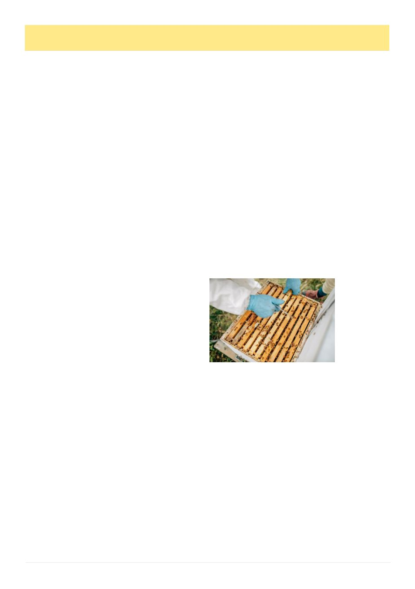

14
Australian Bee Journal
Virus Transmission
Put under the microscope to improve beekeepers’
access to overseas genetics
Agrifutures 2026 March 18th
Experiments look to improve beekeepers‟ ability to
import desirable genetics, by understanding how de-
formed wing virus is transmitted from queen bees to
eggs through drone semen.
New insights into the transmission of a significant
honey bee virus could pave the way for safer access to
imported genetics that could help Australia‟s honey bee
and pollination industry adapt to varroa mite.
Breeding varroa-resistant bees using imported ge-
netics is one approach in the suite of promising meth-
ods to manage Varroa destructor. Genetics can be im-
ported from overseas in the form of drone (male honey
bee) semen or queen bees. Desirable genetics can im-
prove honey production and influence a range of other
attributes. However, ensuring the best-possible genet-
ics are safe from damaging viruses is critical.
Honey bee viruses, including deformed wing virus
(DWV), can be transmitted to queens and their off-
spring through infected drone semen, which can devas-
tate colonies. Fortunately, DWV has not been detected
in Australia.
Dr John Roberts of CSIRO, co-researcher Dr Jody
Gerdts of Bee Scientifics and their collaborative team
are working to understand the transmission process of
DWV so that beekeepers can be confident in the use of
imported beneficial genetics, such as drone semen.
“DWV is common around the world. A challenge
that our industry faces in trying to access overseas ge-
netics is finding source material that is virus-free,” John
explained.
“This project is looking at ways we can reduce the
risk of DWV from imported overseas genetics by better
understanding the transmission process.”
The researchers are interested in understanding the
transmission threshold – the amount of virus that needs
to be present for transmission to take place.
“We know that DWV can be transmitted vertically –
from the queen bee to the offspring – through semen.
But we know this doesn‟t happen every time,” John
said.
“We want to explore whether there is an acceptable
low virus level in semen where vertical transmission
won‟t occur.”
A second objective is to assess the feasibility of
treating drone semen with virus-targeting agents to re-
duce transmission risk. These agents might be specific
antibodies or molecules with virus-fighting effects.
This aspect will be undertaken in collaboration with
Prof. Phillip Lester of Victoria University of Welling-
ton, Dr Biko Muita of CSIRO and Dr Emily Remnant
of The University of Sydney.
“If we can have a few extra approaches – including
treatment options that reduce that risk of transmitting
DWV – that would be a really positive outcome,” John
said.
Getting on the front foot of varroa and viruses
DWV is one of the most common honey bee viruses
around the world and is primarily spread through varroa
mite. The virus can impact all life stages of the honey
bee but one of the main symptoms is wing deformities
in adult bees, which is the most obvious indicator of the
virus. DWV can also result in the mass death of bee
colonies.
Varroa has the potential to worsen the spread and
impact of viruses like DWV, as the double threat to a
colony increases the likelihood of collapse.
“Varroa causes its own damage through feeding on
developing bees and weakening them, but it is much
worse when there‟s the spread of viruses as well,” John
explained.
“DWV in particular has formed a close relationship
with varroa and virus levels get very high in infected
colonies.”
Varroa acts as a vector, helping to spread viruses to
uninfected bees and colonies. Varroa carries DWV
without any symptoms and transmits the virus to honey
bees as they feed. DWV can also multiply within the
body of varroa mites, further increasing the risk of in-
fecting honey bees.
Pathogenic viruses represent a significant biosecuri-
ty threat to the industry, and as a result strict import
requirements and virus testing are in place. This re-
search aims to provide industry with more information
to help overcome the barriers encountered when im-
porting semen presented by virus testing, while still
maintaining this important biosecurity measure.
This project is expected to finish in July 2026.
This article was originally published by AgriFutures Austral-
ia on 18th March 2026. For more information about the
AgriFutures Honey Bee and Pollination Program, vis-
it agrifutures.com.au/rural-industries/honey-bee-pollination.
About AgriFutures Australia
AgriFutures Australia is the trading name for the Rural In-
dustries Research & Development Corporation (RIRDC), a
statutory authority of the Federal Government established by
the Primary Industries Research and Development Act 1989.
AgriFutures invests in research, innovation and leadership to
grow the long-term prosperity of Australian agriculture. We
support 13 levied industries driving growth through targeted
research, development and extension that strengthens indus-
try productivity, sustainability and competitiveness.
AgriFutures also delivers national programs that address
industry-wide challenges and opportunities, connects global
agrifood innovation networks, and builds leadership across
the agricultural sector.
Research investments made or managed by AgriFutures Aus-
tralia, and publications and communication materials per-
taining to those investments, are funded by industry levy pay-
ers and/or the Federal Government.
Beehives in
Cressy,
Tasmania.
Image by Devaka
Seneviratne
(Island Light
Photography).
Supplied by
AgriFutures
Australia